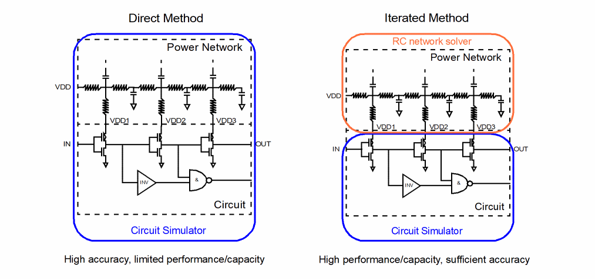

7
EMIR Analysis and Post-Layout Simulations
This section covers the following topics:
Post-layout Simulation Methodologies
The Parasitic Backannotation Flow
Control Options for the Parasitic Backannotation Flow
Guidelines for Parasitic Backannotation Options
Probing Signals for the Parasitic Backannotation Flow
Parasitic Backannotation Report
EMIR Analysis
Spectre® FX provides a powerful transistor-level EMIR solution. This dynamic power net and signal net EMIR capability uses a patented technology and is designed to provide high-capacity and high-performance EMIR analyses. The Spectre FX EMIR solution provides a set of advanced features covering dynamic and static EMIR, power gate support, and differential IR drop. The flow is fully integrated into Virtuoso® ADE Explorer and Virtuoso® ADE Assembler and the results can be post-processed with Voltus™- Fi Custom Power Integrity Solution.
Related Topics
Spectre FX EMIR Technology, Product, and Flow Overview
Getting Started with Spectre FX EMIR Analysis
Handling the Complexity of DSPF/SPEF files
Spectre FX EMIR Technology, Product, and Flow Overview
In an EMIR flow, a circuit is evaluated together with the parasitic resistor and capacitor network, which models the IR drop or the EM effect. There are two general approaches of solving such a problem:
- Direct EMIR analysis - When high accuracy is needed, a brute-force simulation of the entire system (circuit plus parasitic resistances and capacitances) can be performed to accurately calculate the EMIR of any net. The EMIR simulation performance and capacity is subject to the limitation of the circuit simulator being used.
-
Iterated EMIR analysis - In order to conduct EMIR simulation on circuits with much larger power and signal nets within a much shorter time, an alternative is to decouple the nonlinear circuit simulation from the linear RC net analysis. User can iterate the linear RC net analysis by modifying the layout, however, the nonlinear circuit simulation is performed only once. The decoupling of the linear RC nets from the nonlinear circuit is not mathematically equivalent to the original design and certain inaccuracy is introduced, however, the user receives the benefit of simulation performance and capacity.

For high accuracy EMIR analysis of small design blocks, or designs with smaller numbers of RC nets, direct EMIR analysis is recommended.
To gain higher performance and higher capacity on medium-to-large designs, the iterated EMIR analysis method is recommended.
The Spectre FX EMIR flow requires a complete testbench that contains the DSPF files (with the parasitic and instance sections describing the circuit to be analyzed) stimuli, device, and models. .
Use the +emir option on the Spectre FX command line to enable the EMIR analysis during circuit simulation. The details of EMIR analysis, such as the type of analyses, nets to be analyzed, output to be created, are specified using an EMIR configuration file.
Using either direct EMIR analysis or iterated EMIR analysis, the circuit simulation is first performed with various voltages and currents being calculated. Next, a standalone tool, emirreport/emirutil, is called to post-process the simulation results and generate the IR and EM reports. By default, the post-processing step is invoked automatically.
The output of the EMIR analysis is an EMIR text/html report, which lists the EM and/or IR information of all the nets requested. In addition, Voltus-Fi XL can be used to visualize the IR drop and EM current violations in Virtuoso Layout Editor.
Note that while the Spectre FX EMIR flow uses the DSPF representation of the designs, it is not dependent on any post-layout backannotation or stitching capability. The flow also covers designs with power gates.
Product Overview and EMIR Flow
The EMIR product consists of the Spectre FX EMIR simulation and the Voltus-Fi XL visualization. The circuit and the RC network simulation are handled by Spectre FX EMIR. The result is stored in a binary database which contains the average, rms, max IR drop, and EM values. Voltus-Fi XL reads the information from the binary database, evaluates whether the currents are above the limits defined in the technology file, and visualizes the results in the layout.
Different utilities are responsible for creating the IR drop and EM text reports. For advanced node designs for which the technology file format is ICT or qrctechfile, the utility emirreport (or vpsbatch) is used to generate the text report. For older technology nodes which use emdatafile format, the utility emirutil is used to create the text reports.
DSPF requirements
The Spectre FX EMIR flow is based on a DSPF representation of the analyzed design. The DSPF file is required to contain all electrical and geometric information needed for EMIR analysis. The following figure shows a representative DSPF netlist with all important information for EMIR being marked in color.
EM Rule Support
EM rules are defined in DRM, and part of the technology files. The Voltus-Fi XL– Spectre FX EMIR solution supports the following technology file formats.
Advanced node technologies require special EM rules that are only supported in ICT/ICT-EM and qrctechfile format. Refer to the Quantus QRC Techgen Reference Manual for details.
emdatafile format is used for legacy technology nodes. In future, it is expected to be replaced by ICT and qrctechfile format.
Various Cadence EMIR tools support only subsets of these techfile formats (for example, Voltus does not support ICT file, but supports ICT_em). ICT_em is the only format supported by all Cadence EMIR technologies, Voltus, EAD, and Voltus-Fi L and XL.
Getting Started with Spectre FX EMIR Analysis
To perform EMIR analysis, first create a complete simulation testbench with the DSPF files containing the postlayout data of the design. Specify the fingered devices in the instance section and the parasitic resistors and capacitors in the net section. Use the dspf_include statement to read the DSPF content, as shown below.
dspf_include "sram.spf" (Spectre syntax).dspf_include "sram.spf" (SPICE syntax)
dspf_include provides special features like port order adjustments, or handling of duplicated subcircuits, which are not available in include/.include. Therefore, do not use include/.include in the EMIR flow for including the DSPF file.
Large DSPF files may be split into multiple files, for example, sram.dspf, sram.dspf.1, sram.dspf.2, and so on. If the top-level DSPF file (sram.dspf) is included with the dspf_include statement, Spectre FX searches for any related file (sram.dspf.1, sram.dspf.2, ...) and read them automatically.
Setting up a correct postlayout simulation test bench is vital to successful EMIR analysis (see Handling the Complexity of DSPF/SPEF files).
Once the testbench is set up, you can perform a regular (non-EMIR) postlayout simulation with the spectrefx command to ensure that the testbench contains no error, and the circuit behavior is as expected.
% spectrefx input.sp
To perform the same simulation with EMIR analysis added, you need to create and include an EMIR control file with the spectrefx command, as shown below.
% spectrefx +emir=emir.conf input.scs
The EMIR analyses is enabled by using the +emir Spectre FX command-line option. All EMIR-related commands are defined in the EMIR control file.
EMIR Control File
EMIR analysis is performed based on the first transient analysis statement in the netlist. An EMIR control file contains all of the settings and options that are relevant to an EMIR analysis. Some of the options that can be specified using the EMIR control file are: the names of the nets to be analyzed, the type of analyses to be performed, the EMIR analysis time window, choice of direct or iterated methods, settings for RC simulation, and location of EM rule file.
The following sample control file describes EMIR analysis based on the X1 instance. A maximum IR drop analysis is performed on nets VDD and VSS, while RMS-based EM analysis is performed on all nets inside the X1 instance. The two-stage iterated method is used, and the current density limits for the EM report are referenced from file .emfile.txt. Only one subcircuit instance is allowed for EMIR analysis for a Spectre FX run.
Example EMIR control file (emir.config)
net name=[X1.VDD X1.VSS] analysis=[vmax iavg] net name=[X1.*] analysis=[irms]
solver method=iterated
emirutil techfile="./emfile.txt"
The EMIR control file supports the Spectre line continuation character + and comment-line characters * and //.
The following table summarizes the supported EMIR control file options:
The following table summarizes the supported EMIR control file options:
The EMIR control file supports the Spectre line continuation character +, and the comment lines start with character * or string //.
Checking the Progress of EMIR Analysis
As the simulation runs, Spectre FX sends messages to the screen and the simulation log file that show the progress of the simulation and provide statistical information. Following information may be significant to your EMIR analysis when you use the iterated method.
Hardware configuration and run-time machine loading
In the beginning of a simulation session, Spectre FX prints the hardware configuration (physical memory, CPU core specification) and the run-time machine status (available memory, CPU core operating frequency, CPU loading). Since EMIR analysis often involves large-scale designs with gigabytes of data, it is important to ensure that there is sufficient memory available, with CPU operating at full speed (not in power saving mode), and the machine loading is light.
User: user1 Host: lnx-user1 HostID: CD0A1190 PID: 26141
Memory available: 10.2268 GB physical: 16.6236 GB
CPU Type: Intel(R) Xeon(R) CPU E5-1650 0 @ 3.20GHz
Processor PhysicalID CoreID Frequency Load
0 0 0 3192.5 0.3
1 0 1 3192.5 0.2
2 0 2 3192.5 0.3
…
Reading the EMIR Control File
Spectre FX reads the EMIR control file before processing the circuit being simulated. All valid EMIR options are reported in the following section:
~~~~~~~~~~~~~~~~~~~~~~~~~~~
EMIR Analysis Configuration
~~~~~~~~~~~~~~~~~~~~~~~~~~~
nets name=[i1.VDD i1.VSS] analysis=[vmax iavg]
nets name=[i1.*] analysis=[irms]
solver method=iterated
emirutil techfile = emDataFile.txt
If one of the specified EMIR options is not displayed in the summary, check the related warnings, and correct the syntax.
Running the Circuit Simulation to Produce Voltage Profiles
At this point, with the simplification of power and signal nets, Spectre FX is ready to simulate the nonlinear circuit and produce voltage profiles needed for iterated EMIR analyses. This step is similar to a regular circuit simulation, where Spectre FX first parses the circuit, reports circuit inventory, initiates a DC analysis, and finishes the step with a transient analysis.
Creating probes for EMIR analysis: 57 voltage probes, 0 current probes
Time for setting up EMIR tap devices: CPU = 0 s (0h 0m 0s), elapsed = 0 s (0h 0m 0s).
Time for setting up EMIR analysis: CPU = 580.0 ms (0h 0m 0s), elapsed = 80.0 ms (0h 0m 0s). … ****************************************************** Transient Analysis `transient1': time = (0 s -> 20 ns) ****************************************************** … ......9......8......7......6......5......4......3......2......1. 0 Number of accepted tran steps = 918
Total time required for tran analysis `tran': CPU = 4.88835 s,
elapsed = 625.093 ms, util. = 782%.
Time accumulated: CPU = 7.64419 s, elapsed = 5.33127 s. Peak resident memory used = 158 Mbytes.
Time for creating waveform database: CPU = 10.0 ms (0h 0m 0s), elapsed = 10.0 ms (0h 0m 0s).
The reported transient time and the accumulated time are important measures to be considered when optimizing performance. The voltage profiles of the tap devices (active devices connecting to the power and signal RC nets) are stored in the pwl files, and used as input for the second stage EMIR simulation.
This step of EMIR simulation is fully multi-threaded. It uses the number of cores defined by the +mt command-line option.
Simulating the Parasitic RC Nets
In the second stage of the iterated EMIR analysis, the power and signal nets are simulated together with the tap devices. During the simulation, the tap device terminal voltages over time is taken from the voltage profiles created in the first stage. In the second stage, nets are solved individually, except for coupled nets, which are solved together.
The RC network solver writes all IR drop voltage and EM current values to the binary database with the extension emir0_bin. Important log file content is written to the EMIR PARASITICS ANNOTATION SUMMARY section, which provides information on the nets and R/C elements processed. In addition, the number of solved time steps per net, and the elapsed time for the RC solving are essential when optimizing performance.
*****************
Start EMIR RC Analysis at Sat May 6 00:37:07 2023
*****************
Current resident memory used = 153.27 Mbytes.
Reading EMIR configuration file: input.raw/input.emirtap.conf
~~~~~~~~~~~~~~~~~~~~~~~~~~~
EMIR Analysis Configuration
~~~~~~~~~~~~~~~~~~~~~~~~~~~
solver method = iteronly
solver inputwf = input.raw/input.emirtap/input.emirtap.pwl
Current resident memory used = 153.34 Mbytes, Peak memory used = 153.34 Mbytes, at Sat May 6 00:37:07 2023
emir 2nd stage solver pre_sim time is set to 0n
Time for Pre process : CPU = 0 s (0h 0m 0s), elapsed = 0 s (0h 0m 0s).
…
Maximum grounded vsource value = 2.5v
…
Searching and processing cross coupling capacitors in SPF file ./adc_sample_hold.dspf Sat May 6 00:37:07 2023
Cross coupling capacitors found and processed: 0
EMIR RC analysis cross coupling capacitor parsing elapsed time: 0.020 s. …
~~~~~~~~~~~~~~~~~~~~~~~~~~~~~~~~~~
EMIR PARASITICS ANNOTATION SUMMARY
~~~~~~~~~~~~~~~~~~~~~~~~~~~~~~~~~~
Nets: parsed 18 processed 18
Cross coupling capacitors: parsed 0 processed 0
Capacitors: parsed 3709 processed 3709
Resistors: parsed 6803 processed 6712
Nodes: parsed 5955 processed 5955
Nets annotated with C-only: 0 Nets annotated with RC: 18
No errors and No warnings(fixed errors)
Postprocessing 2nd stage waveform files Sat May 6 00:37:09 2023
Done at Sat May 6 00:37:09 2023
…
~~~~~~~~~~~~~~~~~
EMIR NET COVERAGE
~~~~~~~~~~~~~~~~~
Number of non-emir nets = 0
Number of emir nets = 18
Number of skipped nets = 0
Number of successfully solved nets = 18
Number of failed nets = 0
Number of accepted time steps = 4570 (average 253.889 per net)
Number of total time steps = 4570
Number of rejected time steps = 0 (average 0 per net)
average number of Newton Iterations per dc/tran solve = 0.0784656
average number of solver iterations = 3.3846
EMIR PERFORMANCE INFO:
Net Elapsed Time Time Steps
i1.sample 0.26s 813
i1.hold 0.25s 780
i1.Vcm 0.24s 685
i1.Vcp 0.24s 685
i1.inp 0.18s 559
Finished EMIR RC Analysis at Sat May 6 00:37:09 2023
Total time required for EMIR RC analysis: CPU = 4.1 s (0h 0m 4s), elapsed = 1.6 s (0h 0m 1s).
Peak resident memory used = 158.2 Mbytes
This step of the EMIR simulation is fully multi-threaded. It uses the number of cores defined by the +mt command-line option.
After the EMIR data is available in the binary database, another step is performed to create the text reports for IR drop, EM currents, pin currents, and power gate information. The following output shows the related section in the log file (some content is only written to stdout):
Creating EMIR report, check 'input.raw/input.emirtap.emirlog' for more information.
Pre process : CPU = 0 s (0h 0m 0s), elapsed = 0 s (0h 0m 0s)
Database building : CPU = 120.0 ms (0h 0m 0s), elapsed = 150.0 ms (0h 0m 0s)
Simulating nets : CPU = 4.0 s (0h 0m 4s), elapsed = 1.4 s (0h 0m 1s)
Circuit update : CPU = 290.0 ms (0h 0m 0s), elapsed = 130.0 ms (0h 0m 0s)
RC solver : CPU = 2.1 s (0h 0m 2s), elapsed = 860.0 ms (0h 0m 0s)
Time step prediction: CPU = 300.0 ms (0h 0m 0s), elapsed = 170.0 ms (0h 0m 0s)
Device evaluation : CPU = 820.0 ms (0h 0m 0s), elapsed = 180.0 ms (0h 0m 0s)
Output : CPU = 470.0 ms (0h 0m 0s), elapsed = 130.0 ms (0h 0m 0s)
Instance section : CPU = 0 s (0h 0m 0s), elapsed = 10.0 ms (0h 0m 0s)
Post process : CPU = 0 s (0h 0m 0s), elapsed = 0 s (0h 0m 0s)
Generate text report : CPU = 120.0 ms (0h 0m 0s), elapsed = 140.0 ms (0h 0m 0s)
At the end of the simulation, Spectre FX reports the total simulation time and peak memory used.
Aggregate audit (3:53:45 AM, Tue Jan 12, 2016):
Time used: CPU = 2.38 s, elapsed = 63.3 s (1m 3.3s), util. = 3.76%.
Time spent in licensing: elapsed = 60.1 s (1m 0.1s), percentage of total = 94.8%. Peak memory used = 68.8 Mbytes.
Viewing EMIR Results
Spectre FX EMIR writes the IR voltage and EM current values to a binary database with the extension emir0_bin. In addition, it automatically calls the emirreport or emirutil binary for creating the text or html reports.
The textual/html IR drop report (file extension: rpt_ir/rpt_ir.html) lists the voltage drop per net (in the order of largest to smallest), and provides information about the time the maximum IR drop occurred, as well as the layer information and layer coordinates. An example section of an IR drop report is shown below.
VOLTAGE DROP RESULTS … -------------------- "VDD" NET: Vref = 2.5V ----------------------------------- max - drop VOLTAGE-DROP NETNAME TIME LAYER X Y
(V) (s) (um) (um)
6.212m MPM1@16:s 20.781p mwires 75.120 76.080
6.212m MPM3@9:s 20.781p cont 75.120 76.080
6.211m VDD:567 20.781p metal1 75.120 95.840
The EM report (file extension: rpt_em/rpt_em.html) lists the pass/fail results for each resistor segment of a net, and provides information about the resistor name, layer, current, layer width, density (current divided by width), density limit, number of vias required, and the coordinates.
ELECTROMIGRATION ANALYSIS RESULTS
… ----------------------- NET "VDD" ------------------------------- avg There is no resistor whose current density exceeds the limit. %failed resistor layer current width pathLength density limit needed width/#vias X1 Y1 X2 Y2 resistance
(A) (um) (um) (A/um) (A/um) (um/#) (um) (um) (um) (um) (ohm)
pass-16.05% rr1027 via2 1.504m 4.480 155.735 335.783u 400.000u 14(16) 60.190 206.060 60.190 206.060 0.0875
pass-30.86% rr1026 via2 309.737u 1.120 155.735 276.551u 400.000u 3(4) 60.200 199.280 60.200 199.280 0.350
pass-36.10% rr1019 via2 1.145m 4.480 155.735 255.598u 400.000u 11(16)
The EMIR text and html reports can also be created using an existing EMIR binary database using the following command:
$ emirutil -db input.emir0_bin -control emir.conf
For more information on emirutil/vpsbatch utility for creating the reports, and for the visualization of the EMIR analysis results in the layout, refer to the Voltus-Fi user manual.
If there are multiple emir0_bin files created by the same Spectre FX EMIR simulation, it is sufficient to specify only the first binary database file with the -db option. The utility automatically identifies all other binary database files created by the Spectre FX EMIR simulation.
Data Flow
The data flow of the iterated EMIR flow is shown in the following flowchart. The first stage EMIR circuit simulation creates the tap device voltage profiles which are stored in the pwl files, and used in the second stage. The second stage RC network solver writes all IR drop and EM current values to a binary database with the extension emir0_bin. This binary database is used by emirutil/emirreport for creating the text/html reports, and by Voltus-Fi XL to visualize the results in the layout.
All intermediate and output files are written into the Spectre FX output (raw) directory. Some files shown in the figure are only created when the related feature is enabled in the EMIR config file.
If multiple EMIR windows are used in the same EMIR simulation, a set of files is created for each EMIR time window. For example:
Time window 1: emir0_bin, rpt_ir, rpt_em, …
Time window 2: emir1_bin, rpt_ir1, rpt_em1, …
The data flow for the direct EMIR method is the same except that the intermediate files are not created. Only the iterated method EMIR files have the emirtap file extension.
Direct method: design.emir0_bin, design.rpt_ir, design.rpt_em
Iterated method: design.emirtap.emir0_bin, design.emirtap.rpt_ir, design.emirtap.rpt_em
For large designs, the intermediate (pwl, pdb) and EMIR database files (emir0_bin) can be compressed by using the eisopt zipfiles=2 option in the EMIR config file.
Power Gate Support
Power networks may contain power gates (four-terminal MOSFET device) which enable or disable the power supply in the circuit. These power gates split the power supply RC network into two parts; the RC network driving the power gate, and the RC network being driven by the power gate. These nets are strongly coupled together and they should be simulated together in EMIR analysis.
To invoke power gating handling, add the power gate setting in the EMIR control file (emir.config), as shown below.
net pwrgate=[vdd vdd_int] analysis=[vmax]
Both, the global power supply net vdd driving the power gates, and the virtual internal power supply net vdd_int driven by the power gates, need to be specified in the net statement in any order. Wildcards are supported for internal power supply nets, but not for power supply nets. If one power supply net drives multiple power gates, one statement with all power supply nets needs to be defined, as shown below.
net pwrgate=[vdd vdd_int1 vdd_int2] analysis=[vmax]
The IR drop report includes both the power supply net in the usual report file name, for example, input.rpt_ir and the internal power supply net is reported in a file, such as input.rpt_pwg or input.emirtap.rpt_pwg for direct and iterated methods respectively. The IR drop for the virtual power net includes the voltage drop on the global power net, the voltage over the power gate, and the voltage drop on the virtual power net. EM analysis is performed as usual, if specified.
In addition, an important parameter Ton is also reported in the .rpt_pwg file. It reports the time taken to power-up the terminal of the internal power supply net to 95% of the power supply level (VDD).
Each pwrgate statement allows you to define only one global power node and the related virtual power nodes. If a design contains multiple global nodes with power gates and virtual nodes, then, for each of them, a separate pwrgate statement is required.
Serial power gate structures are supported. For such gate structures, not only the top-level power supply net and the internal supply net, but also the net between the serial power gates needs to be specified.
Handling the Complexity of DSPF/SPEF files
SPF Checker
The DSPF files are created with parasitic extraction tools like QRC. The content and format of a DSPF file is heavily dependent on the extraction tool and the settings. Often, simulation problems occur due to problems in the DSPF file.
SPF Checker is a utility that analyses a DSPF file, reports problems which may cause simulation problems, and creates an EMIR configuration file with the recommended mapping statements for EMIR analysis.
The SPF checker utility can be located at <spectre_install_dir>/tools.<plat>/bin/ spfchecker.
The SPF checker utility can be run as follows::
spfchecker SPF_FILE_NAME[-detail <value>] [-message <value>] [-logLOG_FILE_NAME] –c EMIR_CONF_NAME] [-ckt=subckt_name] [-ctl=filename] [+lorder licenseList] -force –help
The SPF checker creates the following files:
-
test.spf.chklog- Detailed SPF checker log file -
test.spf.spfinfo- DSPF element inventory -
test.spf.emir_conf- Recommended settings for EMIR config file -
test.spf.stitch_opts- Recommended (SPICE format) settings for DSPF backannotation
Before running any EMIR analyses, ensure that your DSPF file is clean. This can be achieved by running the spfchecker utility and by confirming that spfchecker does not report an error message in the *chklog file. Typical error messages in the chklog file are:
SPF-0003: 2 ERROR: NETs broken into pieces
SPF-0016: 6 ERROR:Instances with different connection from the NET Section
SPF-0019: 430 ERROR: NETs with sub-nodes not connecting to any parasitics
SPF-0028: 1 ERROR: Instance model terminal definition conflicts
SPF-0039: 3854807 ERROR: Layer is extracted as both via and metal layer
Simulating a DSPF file for which spfchecker reported errors may generate invalid EMIR simulation results. If spfchecker reports warnings and no errors, the DSPF file can be used in EMIR analysis.
Additionally, spfchecker prepares content for the EMIR config file into the *.emir_conf file. This content can either manually be copied into the EMIR config file, or included with an include statement:
include test.spf.emir_conf
Port Order Handling
When setting up the EMIR simulation, you need to ensure that the subcircuit port order in the DSPF file matches the port order of the instance call in the top-level netlist. The .dspf_include command provides advanced functionality for port order mapping, as given below.
.dpsf_include file.spf port_order=[spf|sch]
-
port_order=sch: (Default). The port order is taken from schematic subcircuit definition. The same port number and names are required. If the schematic subcircuit definition is not available, a war:ning is issued in the log file, and DSPF port order is used. -
p
ort_order=spf: The port order is taken from the DSPF subcircuit definition.
Advanced Analyses
Signal Net IR Drop Analysis
IR drop analysis (analysis=[vmax vavg]) is typically applied to power nets that are driven by voltage sources, which provides a constant reference voltage over the EMIR window. However, designs may have internal generators or regulators. For the generator driven nets, an IR drop analysis may be important. These nets behave like signal nets since their voltage value changes over time.
The Spectre FX EMIR signal net IR drop analysis (analysis=[sigvmax sigvavg]) allows you to perform IR drop analysis on such nets. However, you need to define the reference voltage being used for the IR drop calculation. The recommended setting for generators is refnode=vdd. At each time point, it calculates the voltage at the reference node vdd, and calculates the IR drop in reference to this voltage.
net name=[i1.vdd] analysis=[sigvmax] refnode=vdd
The following are supported for defining the reference voltage:
-
reftype=max- Use the maximum voltage of all nodes at each time point. -
reftype=avg- Use the average voltage over all nodes at each time point (default). -
reftype=pinfindsrc=true- For the given nets, use the vsource connected to*|Pnode. -
reftype=pinfindsrc=false- For the given nets, use the*|Pnode as the reference, and not vsource. -
refnode=name - Use the specified sub node of*|NETas reference. -
vref=value - Use the specified voltage as reference.
When using reftype=max for a net with three subnodes: net1:1 (1V), net1:2 (2V), and net1:3 (3V), the detected reference voltage will be 3V, and the IR drop calculated will be 2V for net1:1, 1V for net1:2, and 0V for net1:3. When using reftype=avg the reference voltage will be 2V, and the IR drop calculated will be 1V for net1:1, 0V for net1:2, and -1V for net1:3.
The signal net IR drop analysis is automatically changed to a regular IR drop analysis (vmax), if vref=value is specified, or if the net (during the EMIR time window) is driven by a constant voltage source.
Differential (Rail-to-Rail) IR Drop Analysis
The differential IR drop feature allows you to identify the worst-case IR drop between the specified power supply and the ground node. At each time point, it calculates the worst IR drop over all the power supply sub nodes, and the worst IR drop over all the ground sub nodes. At each time point, it also calculates and reports the worst case rail-to-rail voltage for the given EMIR time window.
The differential IR drop analysis is enabled with the analysis=r2rvmin option. Multiple power supply nodes can be specified. If the ground node is not specified in the r2r_refnet statement, Spectre FX automatically detects the global ground node.
net name=[VDD] r2r_refnet=VSS analysis=[r2rvmin]
The following is an example of a differential IR drop report:
**r2rvmin RESULT
Power_net_name R2rvmin_value R2rvmin@time Attribute Ref_net_name Ideal_r2rvmin Ref_Attribute Rule_name
(V) (V)
VDD 2.489 20.781p 0 VSS 2.500 1 _R2RVMIN_AUTO_RULE_1
The r2rvmin feature allows you to apply the analysis only to selected layers, selected tap devices, tap devices of a user-defined model, and selected bounding boxes. Combinations are supported and combined with the AND behavior. Excluding tap nodes based on their layer, model, or instance information is also supported. To differentiate between multiple r2rvmin reports, you can apply the rule names to each r2rvmin statement (r2rvmin_rule_name). Refer to the r2rvmin option in the table under the EMIR Control File section for more information. The differential (rail-to-rail) IR drop analysis is only supported in the direct method.
Static EMIR Analysis
Static EMIR analysis enables you to evaluate IR drop and EM currents based on the specified current consumptions for subcircuit instances without running a transient or DC simulation. The specified currents are distributed to the tap devices based on the width and length ratios of devices in the design. The IR drop and EM current analysis is performed based on the current at each tap device.
To enable static EMIR analysis, you need to use the static ifile option in the EMIR configuration file, as shown below.
net name=[I1.VDD I1.VSS] analysis=[vavg iavg]
static ifile="static_currents.txt"
For static EMIR analysis, vmax and vavg for IR drop and imax, irms, and iavg values for EM currents remain the same, and therefore, just one can be selected in the statement.
The subcircuit instance currents are defined (in A) in the static_currents.txt file with the subcircuit instance name, subcircuit port name, and the current flowing in the port. This current is distributed to all MOSFET tap devices. No current distribution is done for non-MOSFET tap devices. In that case, these devices are excluded from the block-level based current distribution. The following is an example of the file:
I1 VDD 0.001
I1.I2 VDD 0.005
I1.I2/I3 VDD 0.00001
I1.I2.I3/I4 VDD 0.000005
I1 VSS -0.005
I1.MPM1@19 VDD 0 //exclude tap device from current assignment
I1.MPM3@15 VDD 0.0001 //define tap device current,exclude from current assignment
x0.QQ0 VSS 0.1 b //define current for non-MOSFET device and terminal
The accuracy of static EMIR analysis strongly depends on the detailed current information provided in static_ifile. Therefore, it is highly recommended to provide the current consumption for every subcircuit instance.
The results of static EMIR analysis are written to the same IR drop and EM current text reports, and into the same EM binary database as dynamic EMIR analysis.
dc and tran are ignored.
Static EMIR analysis can also be applied to designs with power gates. For this, you need to specify the pwrgate option, as follows:
net name=[I1.VDD] analysis=[vavg iavg]
static ifile="static_currents.txt"
net pwrgate=[I1.VDD I1.VDD_INT] analysis=[vavg iavg]
You need to specify the power gate current in the static_currents.txt file, as shown below.
I1 VDD 0.001
I1 VDD_INT 0.0005
The static EMIR current file for the top-level EMIR subcircuit can be generated while running a dynamic EMIR analysis by using the output=power option in the time window statement.
Spectre FX EMIR Analysis Using Voltus-XFi
Voltus-XFi Custom Power Integrity Solution is used for transistor-level power and signal integrity analysis, which includes multi-mode simulation for EM and IR analysis. This solution combines Cadence® Quantus™ RC extraction, Spectre FX EMIR simulation, and Voltus-XFi visualization in the Cadence Virtuoso® platform. This combination of products simplifies the use model of the flow by using a common setup for all the tools. You do not have to run the flow in separate steps.
Return to top